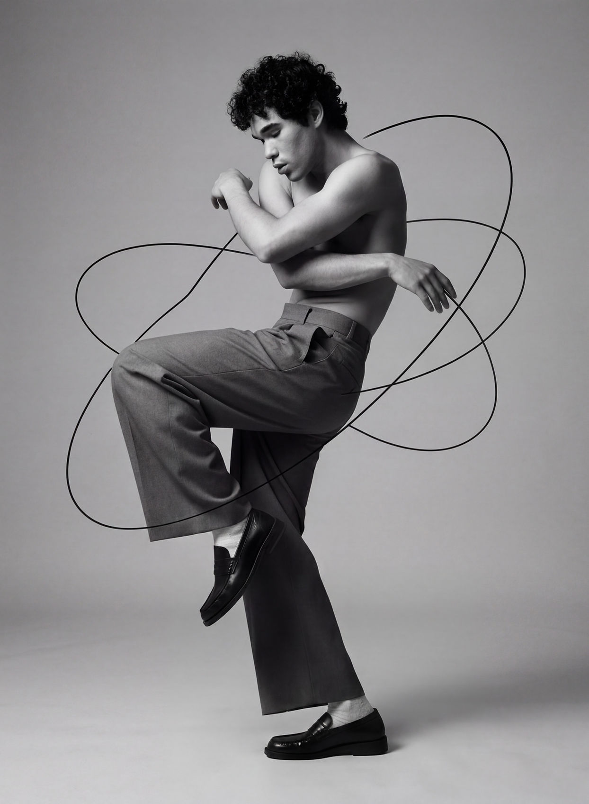

Tag each track's tempo, energy, and mood. Sequencer maps the distance between every pair of songs and threads the path with the fewest jarring jumps — no shuffle, no manual dragging.
No shuffle, no manual dragging — the sequencer treats each track as a point in tempo/mood/energy space and threads the shortest path through all of them.
Add each song's title, tempo, energy level, and mood. Takes a few seconds per track.
Every song becomes a node. The distance between any two tracks is measured across all three attributes at once.
Sequencer walks the nearest unplayed track each time, then scores the whole playlist on how smooth the ride is.

Every good session moves like a story — a slow open, a rising middle, a peak that lands right on cue. Sequencer reads the tempo, energy, and mood behind every track you tag, then plots the smoothest possible route between them.
No more guessing what comes next. No more shuffle. Just the shortest path from chill to peak, built one transition at a time.
Tempo, energy, and mood are each normalized to a 0–1 scale, then treated as coordinates. The gap between any two tracks is just the straight-line distance between their points — closer points, smoother transitions.
Same engine, different use — from a 20-track DJ set to a lo-fi study queue, Sequencer finds the smoothest route through whatever you throw at it.
Every feature exists to make the sequencing engine work with less input from you.
Type a track name and Sequencer estimates tempo, energy, and mood — so you're not tagging blind.
Hover any two tracks to see their exact distance score before you commit to an order.
Drag any track out of sequence and Sequencer quietly re-routes everything around your move.
Every playlist gets a 0–100 smoothness score, so you know the sequence is actually working.
Send the finished order to Spotify, Apple Music, or a plain M3U file in one click.